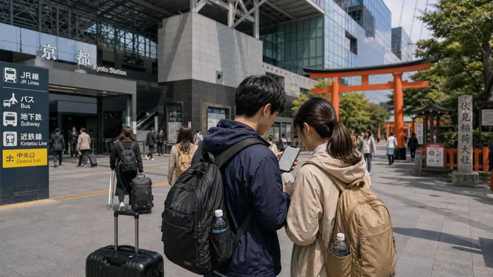
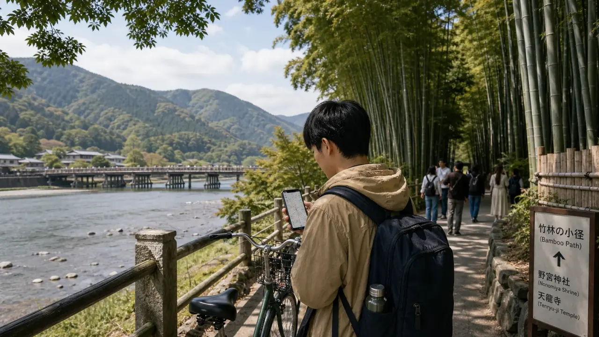
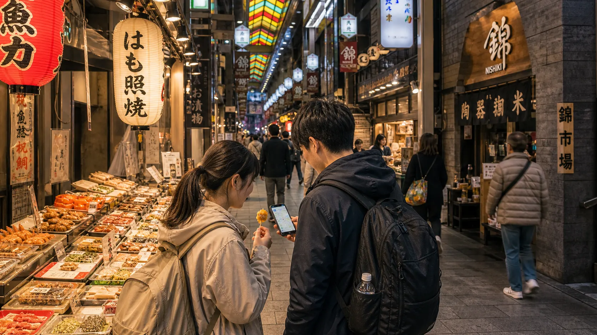
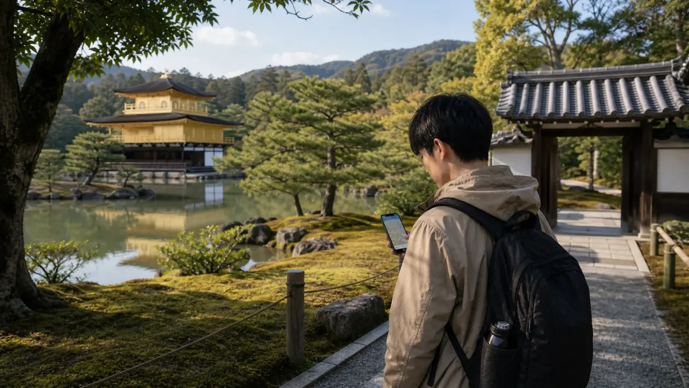

- Last reviewed
- June 3, 2026
- Best for
- First-time Kyoto visitors balancing temples, crowds, hotel cost, and transport
- Trip length
- 2 days for highlights, 3 to 4 days for a calmer first visit
- Budget pressure
- Hotel timing, buses, paid temples, luggage, and day-trip transfers
- Use this to decide
- Which Kyoto zones deserve your time before booking hotels and transport
Kyoto is the city where a Japan trip can feel magical and expensive in the same hour. The trick is not to see every temple. It is to group neighborhoods, visit famous streets early, and choose a hotel base that does not punish you with crowded buses every night.
Main Kyoto sightseeing zones
Use these zones as route blocks. Kyoto gets expensive when you jump between distant sights without checking buses, rail lines, and walking distance.

Arrival and day trips Kyoto Station and south KyotoBest for luggage, Shinkansen, Nara, Fushimi Inari, and practical first-night hotels.
 Classic Kyoto
Higashiyama and Gion
Classic Kyoto
Higashiyama and Gion
Best for old streets, temples, early walks, atmosphere, and the biggest crowd risk.

West Kyoto ArashiyamaBest for bamboo, river views, temples, mountain scenery, and morning crowd timing.

Food and hotel core Nishiki, Shijo, KawaramachiBest for food, shopping, evening plans, central hotels, and practical bus access.

Quieter temples Northern KyotoBest for slower temple routes, gardens, Kinkaku-ji planning, and avoiding the same east-side crush.
How many days in Kyoto?
| Trip length | What to do | What to avoid |
|---|---|---|
| 1 day | Pick one side: Higashiyama/Gion or Arashiyama | Trying to cross the city for every famous sight. |
| 2 days | Higashiyama/Gion plus Arashiyama or Fushimi Inari | Too many paid temple stops in one day. |
| 3 days | Add Nishiki/Shijo and a slower northern route | Hotel base far from useful transit. |
| 4 days | Add Nara, Uji, or a calmer second-tier Kyoto day | Moving hotels inside Kyoto. |
Where to stay in Kyoto
Kyoto Station is best for transport and luggage. Shijo-Kawaramachi is best for food and evenings. Gion-Higashiyama is best for atmosphere but can cost more and feel crowded. Nijo and Karasuma Oike can be good value if you are comfortable using subway and buses.
Use the Kyoto hotel area guide before booking. Check accommodation tax display, cancellation terms, and whether your hotel keeps luggage before check-in.
How to get around
Kyoto transport is more fragile than Tokyo. Many classic sights depend on buses, walking, or mixed rail and bus routes. Crowded buses are a real cost because they slow the day and make hotel location matter more.
- Use rail where it fits: Kyoto Station, Arashiyama, Fushimi Inari, Nara, Osaka, and Uji.
- Use buses carefully for temple areas, and avoid building the whole day around peak-hour buses.
- Walk more inside one zone instead of hopping between distant temples.
- For Kansai Airport arrivals, compare rail and bus in the KIX to Osaka or Kyoto transfer guide.
Budget food in Kyoto
Kyoto food does not have to be expensive. Balance one planned meal with casual choices: bakeries, ramen, soba, udon, convenience stores, department-store basements, and small restaurants around station areas.
Nishiki Market is useful for tasting, but it can become expensive if you treat every stall as a must-buy. Use it as a snack walk, then eat a normal meal nearby.
How to avoid the worst crowds
The easiest crowd rule is to do one famous photo-heavy zone early, then move to less pressured neighborhoods. Higashiyama, Gion, Arashiyama, and Fushimi Inari can all feel different before late morning.
For a broader plan, read Is Japan too crowded in 2026?. The problem is not Kyoto as a whole; it is that too many visitors follow the same route at the same hour.
Common Kyoto budget mistakes
A beautiful area can still be a poor base if luggage, buses, and late-night food become difficult.
Paid entries, transit, and fatigue add up. Pick fewer temples and leave space for streets and gardens.
Use early mornings for the most popular sights, then move to calmer areas.
A cheaper Kyoto hotel may lose value if the first transfer from Kansai Airport is awkward.
Sources and current checks
Verify opening days, transport routes, and local charges before booking. Start with Kyoto Travel, the official Kyoto city tourism guide, Kyoto Travel's accommodation tax change notice, and official rail or bus operator pages for your exact route.
Choose the hotel base and route clusters before paying for rooms, passes, or timed activities.
Compare Kyoto Hotel AreasIn Kyoto, a good day is usually one strong zone plus a slow walk, not five famous places connected by crowded buses.